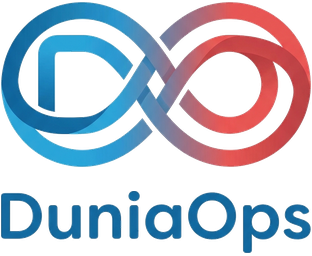

AI-Accelerated Software Development
Production-quality software in weeks, not months. We pair senior engineers with AI coding agents to design, build and ship web platforms, APIs and internal tools — at a pace and price traditional agencies can't match.
Software development has changed. Your costs should too.
AI coding tools have transformed how software gets built — but they only produce reliable results in experienced hands. DuniaOps uses AI agents for what they're best at: generating well-structured code, writing thorough test suites, and iterating quickly on feedback. Our senior engineers do what humans are best at: understanding your business, making architectural decisions, and reviewing every change before it reaches production.
The result is a different economics of software. Projects that previously justified a six-month agency engagement can now go live in weeks — which means ideas that were too expensive to build suddenly aren't. If you've been putting off an internal tool, a customer portal, or a product idea because of cost, it's worth a fresh conversation.
MVPs & new products
A working, hosted first version of your product in weeks — ready for real users, customers or investors.
Web platforms & portals
Customer portals, dashboards, marketplaces and internal tools, built on modern, maintainable stacks.
APIs & integrations
Clean, documented APIs, and integrations that connect your systems — payments, CRMs, calendars, ERPs.
AI product features
Assistants, document extraction, summarisation and automation built into your existing product, with accuracy and cost under control.
Legacy modernisation
Old systems rebuilt piece by piece on modern foundations — AI tooling makes rewrites dramatically cheaper than they used to be.
Rapid prototypes
Clickable, testable prototypes in days, to validate an idea before you commit to building it fully.
How we keep AI-built software trustworthy
Senior review on every line
No AI output reaches your codebase unreviewed. A senior engineer reads, tests and approves every change — and is accountable for it.
Tests written first-class
AI makes comprehensive test suites affordable. Your project ships with automated tests that catch regressions before your users do.
You own everything
Code in your repositories, infrastructure in your cloud accounts, full IP assignment. No lock-in to us or to any AI vendor.
Transparent working
You see the work in progress from week one — live staging environments, not slide decks about progress.
AI-assisted development, honestly answered
Is AI-generated code safe to use in production?
Yes — when it is supervised. Every line produced with AI assistance is reviewed, tested and approved by a senior engineer before it ships. You get the speed of AI tooling with the accountability of experienced professionals.
How much faster is it, really?
For typical business applications we deliver a working first version in weeks — often 2–4× faster than traditional development. The biggest gains are in prototyping, boilerplate, test coverage and integration work; genuinely novel algorithmic problems still take human time.
Can you add AI features to our existing product?
Yes. We integrate LLM-powered features — assistants, document extraction, summarisation, workflow automation, smart search — into existing products, with proper attention to accuracy, privacy and running costs.
Who owns the code?
You do — all source code, infrastructure configuration and documentation is delivered to your repositories and cloud accounts with full IP assignment.

Got an idea that was "too expensive"?
Tell us about it — the answer may have changed.